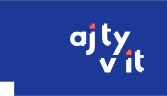

Sponzoři a partneři#
Část příjmů junior.guru plyne ze sponzorství. Podpořit junior.guru mohou jak firmy, tak jednotlivci. Partneři jsou subjekty, se kterými je nějaká nepeněžní dohoda.
Proč má junior.guru sponzory#
Protože peníze od juniorů nestačí na provoz, viz finanční výsledky. Díky sponzorům může být členství v klubu pro juniory levnější.
Také je žádoucí, aby junior.guru stálo na pomezí firem a juniorů a vyvažovalo diskuzi na obě strany, ne aby mazalo med kolem pusy jedné z nich a stavělo ji proti druhé. Rozložení příjmů junior.guru mezi juniory i firmy je způsob, jak to zajistit.
Honza se ale nakonec vždy snaží mít na prvním místě dobro samotných juniorů. Ačkoliv dělá obchody s firmami, zachovává si nezávislost a nenechává se ovlivnit ve prospěch konkrétního produktu.
Tarif „Budujeme brand“#
Sponzoři, kteří zaplatili za tarif číslo 3 (vyšší je lepší) z přehledu na Pošli LOVE.


Tarif „Poskytujeme kurzy“#
Sponzoři, kteří zaplatili za tarif číslo 2 (vyšší je lepší) z přehledu na Pošli LOVE.
| ENGETO Academy |
1 člen |
245 dní zbývá |
|
| Praha CODING School |
9 členů |
31 dní zbývá |
Tarif „Sponzorujeme“#
Sponzoři, kteří zaplatili za tarif číslo 1 (vyšší je lepší) z přehledu na Pošli LOVE.
|
Mews
Podílí se na mentoringu a rozšířené pomoci pro lidi, kteří na junior.guru žádají o stipendium. Organizujeme spolu akci AI a junioři: pomocník, nebo riziko?. |
6 členů |
184 dní zbývá |

|
GitHub Sponsors#
Sponzoři, kteří využívají GitHub Sponsors. Převážně jednotlivci, ale i firmy.
|
@Aprillion
Peter Hozák |
|
|
@PavlaBerankova
Bershee |

|
|
@adinafxv
Adina |

|
|
@bechynsky
Štěpán Bechynský |
|
|
@befeleme
Karolina Surma |

|
|
@clytaemnestra
Mia Bajić |

|
|
@honzakral
Honza Král |

|
|
@lubosm
Lubos Magat |
|
|
@midatechsro
midatechsro |
|
|
@nadade
Nada Jasikova |
|
|
@spaze
Michal Špaček |
|
|
@zzen
Jakub Nešetřil |

|
Bývalí sponzoři#
Ataccama, CDN77.com, Creatiweb, Credo Ventures, Glance Media, †Green Fox Academy, ITnetwork, Inuits, Jetveo, Lynt, OpenGeoLabs, Processand, Pure Storage, Rector, STRV, †Software Development Academy, pipetail.io, wf tech.
GitHub Sponsors: @GoodMirek, @JirkaChadima, @MartinaPiekna, @SvetlanaM, @TomasVotruba, @adderpositive, @ikvasnica, @indeedeng, @katemihalikova, @lspdv, @marekaf, @ondrejsika, @pavlix, @petrjakubec, @petrvacha, @tricoder42.
Patreon: Tomáš Ehrlich, Tomáš Jeřábek, Vojta Tranta, Petr Viktorin.
A další neveřejně, někteří přes GitHub Sponsors, někteří přímo na účet.
Sponzoři a klub#
Sponzoři mají přístup do klubu. Mohou vyhlížet talentované juniory, promovat ve vyhrazených kanálech své aktivity, poskytovat slevy na své produkty. Mohou se zapojit do diskuzí a radit, nebo poskytovat pohled z druhé strany. Mohou spolu s klubem vymýšlet různé způsoby vzájemné podpory, ať už jde o propagaci, slevy, nebo tvorbu společných článků, podcastů, videí.
Je na firmě, jak to uchopí, a co z toho „vyždíme“. Už jen tím, že svými financemi podpoří existenci junior.guru a bude vidět její logo, si buduje dobré jméno jak mezi lidmi z nastupující generace vývojářů, tak mezi zainteresovanými profíky.
Poskytovatelé kurzů jako sponzoři#
Sponzory mohou být i poskytovatelé kurzů, což staví junior.guru do konfliktu zájmů. Na této stránce je proto transparentně zdokumentována každá dohoda, aby nebylo pochyb, že junior.guru je nestranné.
Firmy i přes své sponzorství respektují, že junior.guru a klub jsou místa, kde se o nabídce kurzů diskutuje na neutrální půdě, lidé si sdílí zkušenosti a porovnávají. Recenze členů v klubu jsou subjektivním hodnocením konkrétních lidí a firmy nemají možnost do něj zasahovat. Pokud chce poskytovatel kurzů propagovat své produkty, může tak činit ve vyhrazených místech v klubu.
Honza si dává pozor na to, aby žádný konkrétní kurz sám neprotežoval a aby aktivity v rámci sponzorství nezasahovaly do nestrannosti junior.guru.
Partneři#
Aktuálně junior.guru spolupracuje s 16 partnery. Partneři jsou komunity a malé subjekty, s nimiž má junior.guru domluvenou nějakou oboustrannou nefinanční výpomoc.
|
Aj Ty v IT
Spolupráce mezi komunitami. Mohou v klubu propagovat své akce apod. Až bude junior.guru umět SK portály, mají slíbený pravidelný export z databáze pracovních inzerátů. |
3 členové |
 |
|
Apify
Zdarma poskytují platformu pro sběr dat, kde může junior.guru provozovat programy stahující data o pracovních nabídkách, programátorských srazech, a mnohé další. |
0 členů |

|
|
CoreSkill
Využívají klub pro komunikaci se svými klienty (studenty). Dan Srb v klubu moderuje a radí s frontendem. |
10 členů |

|
|
Creatiweb
Za symbolickou cenu poskytují pracovní místo ve své kanceláři. |
0 členů |

|
|
Czechitas
Spolupráce mezi komunitami. Mohou v klubu propagovat své akce apod. Dostávají pravidelný export z databáze pracovních inzerátů. |
1 člen |
|
|
Česko.Digital
Spolupráce mezi komunitami. Snaha zapojit juniory do dobrovolných aktivit podporující digitalizaci státu a neziskovek. |
0 členů |

|
|
DigiKoalice
Projekt junior.guru je členem DigiKoalice, české národní koalice pro digitální dovednosti a pracovní místa. |
0 členů |

|
|
Dokážeš programovat
Využívají klub jako komunitu pro své studenty. Lucie Lenértová v klubu pořádá různé online akce. |
32 členů |
|
|
Frontendisti
Spolupráce mezi komunitami. Mohou v klubu propagovat své akce apod. |
3 členové |
|
|
Imper
Zdarma poskytují přístup k datům o firmách, aby se jimi dal obohatit katalog poskytovatelů kurzů. |
0 členů |

|
|
PyLadies
Spolupráce mezi komunitami. Mohou v klubu propagovat své akce apod. Celé junior.guru kdysi vzniklo v rámci dobrovolnictví pro PyLadies a na základě podnětů z PyLadies. |
5 členů |

|
|
Pyvec
Spolupráce mezi komunitami. Python komunita může v klubu propagovat své akce apod. Provozovatel junior.guru je nejen členem, ale dokonce ve vedení Pyvce. Celé junior.guru kdysi vzniklo jako výsledek dobrovolnictví pro Python komunitu. |
5 členů |

|
|
ReactGirls
Spolupráce mezi komunitami. Mohou v klubu propagovat své akce apod. |
3 členové |

|
|
Skoumal
Historicky o první klubové sponzorství. Když Skoumal díky junior.guru získá zajímavé benefity (např. nové zaměstnance), může mít chuť přihodit i finanční podporu. |
1 člen |

|
|
Týden pro Digitální Česko
Projekt junior.guru je každoročním partnerem Týdne pro Digitální Česko, celostátní vzdělávací akce v oblasti digitalizace. |
0 členů |

|
|
yablko
Spolupráce mezi spřízněnými projekty. Videa s yablkovými moudry jsou v příručce, yablko chválí klub kudy chodí. |
1 člen |
Partnerství s komunitami#
Organizátoři komunit, které jsou partnery junior.guru, mají přístup do klubu. Mohou v něm promovat svoje aktivity. Mohou spolu s klubem vymýšlet různé způsoby vzájemné podpory, ať už jde o propagaci, slevy, nebo tvorbu společných článků, podcastů, videí.
Je na lidech z partnerské komunity, jak to uchopí, a co z toho „vyždímou“. Spolupráce by ale neměla být samoúčelná, měla by vždy vyústit něco, co bude především sloužit samotným juniorům.